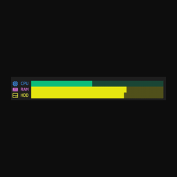
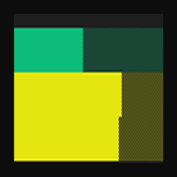
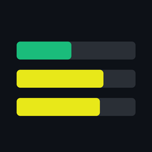

Gallery nie renderuje README ani screenshotów — ikona to jedyne, co tam widać wizualnie. Dlatego trzy warianty, oglądane w tych rozmiarach, w jakich Gallery ich naprawdę używa.
Cały blok z podpisami CPU/RAM/HDD, wpasowany w kwadrat. Proporcje paska są szerokie, więc po wyśrodkowaniu zostaje cienki pasek w pustce — w 32 px nie widać nic.

128 pxWypełnia kafelek, ale RAM i HDD są oba żółte i sąsiadują — przerwa między nimi ginie przy skalowaniu i zlewają się w jedną plamę. Czyta się jak dwa bloki, nie trzy paski.

128 pxTrzy zaokrąglone paski na tle toru, w kolorach modułu (46 / 73 / 70 % — te same wartości, co na zrzucie z README). Rysowane w 1024 px i zmniejszone, więc krawędzie są gładkie, a odstępy przeżywają zjazd do 32 px.

128 pxNeofetch-style system stats for your PowerShell prompt: CPU, RAM and disk as colour-coded bars… Windows only (reads WMI/CIM).